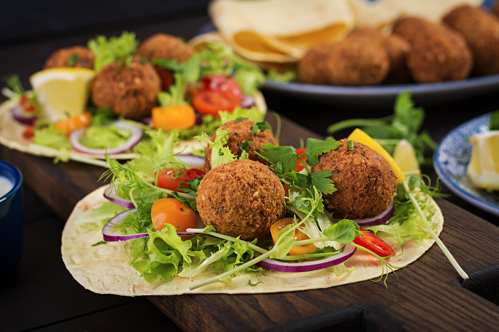
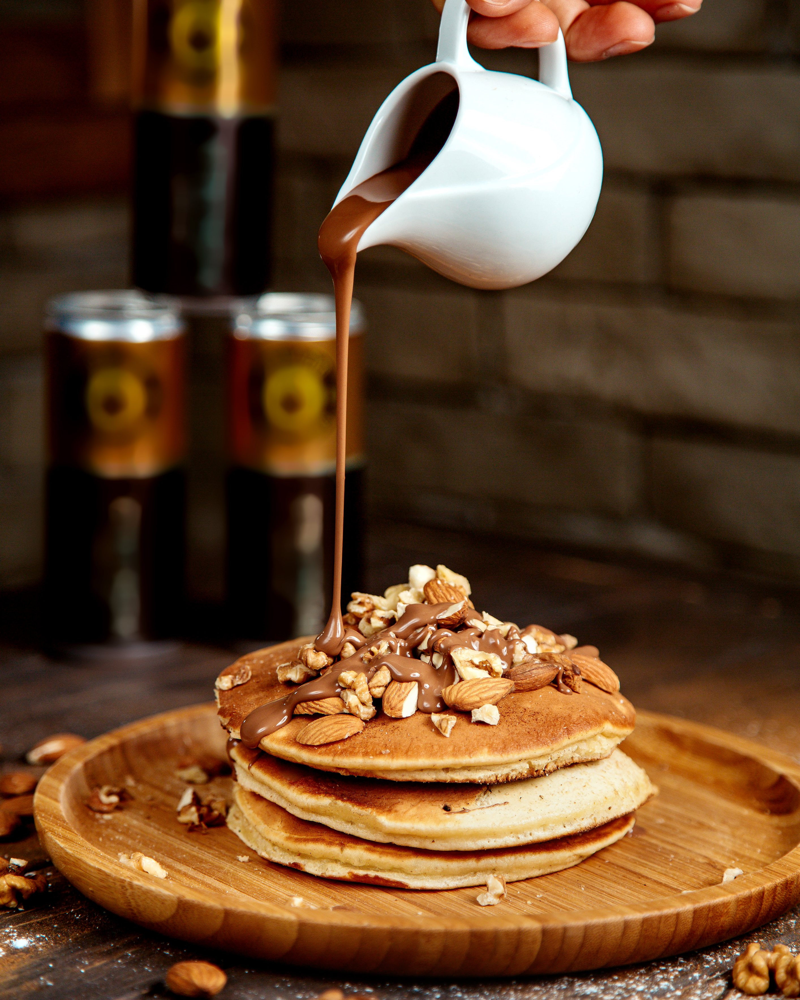

Falafel

Description
Falafel is a famous Middle Eastern street food made from chickpeas and spices, believed to have originated in
Egypt.
Ingredients
- 1 cup dried chickpeas (soaked overnight)
- 1 small onion (chopped)
- 2 cloves garlic
- 1/2 cup fresh parsley
- 1 teaspoon cumin
- 1 teaspoon coriander
- 1 tablespoon flour
- Salt and pepper to taste
- Oil for frying
Preparation Steps
- Soak the chickpeas in water overnight.
- Drain the chickpeas and place them in a food processor.
- Add onion, garlic, parsley, cumin, coriander, salt, and pepper.
- Blend the mixture until it becomes a coarse paste.
- Add flour and mix well.
- Shape the mixture into small balls.
- Heat oil in a deep pan.
- Fry the falafel balls until golden brown and crispy.
- Serve hot with pita bread, salad, and tahini sauce.
Bon Appetit!
Pancakes

Description
Pancakes are a popular breakfast dish made from a simple batter of flour, eggs, and milk.
They are cooked on a pan until golden and often served with chocolate sauce, syrup, or fruits.
Ingredients
- 1 cup flour
- 1 cup milk
- 1 egg
- 2 tablespoons sugar
- 1 teaspoon baking powder
- 1 tablespoon butter
- Chocolate sauce for topping
Preparation Steps
- In a bowl, mix flour, sugar, and baking powder.
- Add milk and egg, then mix until the batter becomes smooth.
- Heat a little butter in a pan over medium heat.
- Pour a small amount of batter into the pan.
- Cook until bubbles appear, then flip the pancake.
- Cook the other side until golden brown.
- Serve the pancakes with chocolate sauce on top.
Bon Appetit!